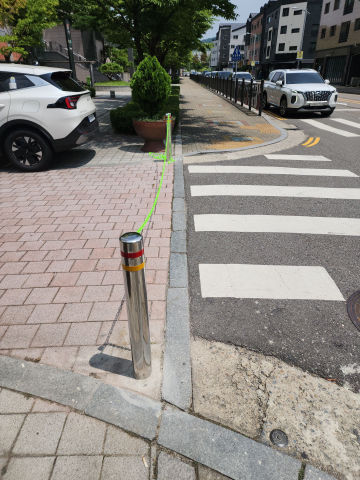
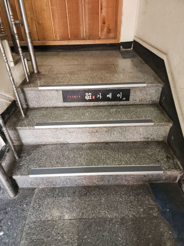
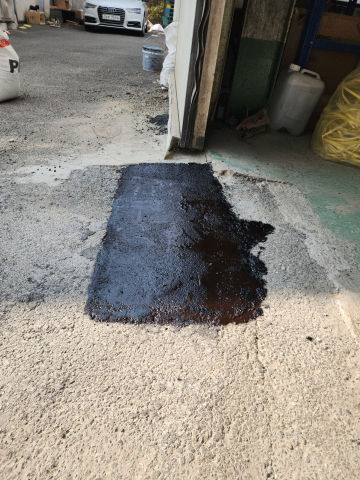
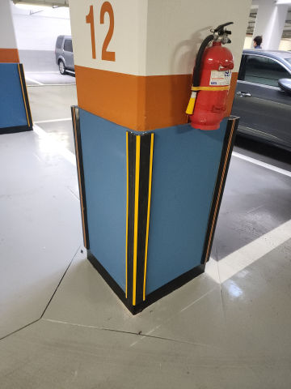
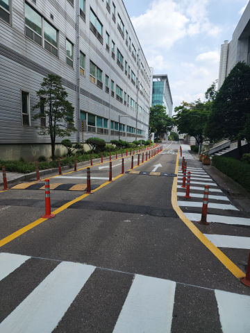

볼라드 / WORK CASE
차량 진입방지 볼라드 파손 교체
차량 충돌로 꺾이거나 훼손된 기존 볼라드를 철거하고 새 제품으로 교체한 사례입니다.제품뿐 아니라 기존 고정부와 바닥 손상을 함께 확인해 재설치 범위를 정합니다.
볼라드·반사경·카스토퍼부터 차량진입판·아스콘 부분보수까지. 1개 소량 시공은 물론 파손 시설 철거·교체, 작업 후 발생하는 폐기물까지 원스톱 처리하고 세금계산서 발행도 가능합니다.
같은 시설물이라도 재질과 설치 방식, 바닥이 콘크리트인지 아스콘인지에 따라 교체 방법이 달라집니다. 파손된 본체뿐 아니라 앙카, 지주, 브라켓, 기존 매립부와 바닥 손상도 함께 확인합니다.
같은 시설물도 현장에서는 부르는 이름과 제품 규격이 조금씩 다릅니다.
재질, 형태, 고정 방식과 설치 위치를 함께 보고 현장에 맞는 제품과 작업 방법을 안내합니다.

차량진입방지봉 · 안전볼라드 · 주차방지봉 · 스텐볼라드
앙카식 / 매립식 / 앙카이동식
제품·시공방법·지역 안내 보기 →
계단논슬립 · 미끄럼방지패드 · 계단미끄럼방지 · 논슬립테이프
접착 시공 / 양면테이프 보조 시공 / 제품·바탕에 따른 타공 고정
제품·시공방법·지역 안내 보기 →
도로반사경 · 볼록거울 · 사각지대거울 · 주차장안전거울
벽부 브라켓 고정 / 벽부 지주 / 앙카 지주
제품·시공방법·지역 안내 보기 →
아스팔트보수 · 포트홀보수 · 아스콘땜빵 · 주차장바닥보수
파손부 정리·청소 / 보수재 충전 / 층별 다짐
제품·시공방법·지역 안내 보기 →
주차금지대 · 접이식주차봉 · 주차차단봉 · 주차방지봉
콘크리트 앙카 고정 / 아스콘용 고정 방식 / 기존 앙카·베이스 철거 후 재설치
제품·시공방법·지역 안내 보기 →
경사판 · 차량경사판 · 고무경사판 · 경계석진입판
단차 높이 맞춤 배치 / 연결형 조립 / 제품 사양에 따른 앙카 고정
제품·시공방법·지역 안내 보기 →
주차스토퍼 · 주차블럭 · 주차멈춤턱 · 주차턱
콘크리트용 앙카 체결 / 아스콘용 깊은 천공·전용 고정부재 / 기존 앙카홀 상태 확인 후 위치 재설정
제품·시공방법·지역 안내 보기 →
코너가드 · 모서리보호대 · 기둥보호대 · 주차장기둥보호대
접착 고정 / 제품에 따른 앙카·피스 보강 / 기존 접착제 제거 후 재시공
제품·시공방법·지역 안내 보기 →
시선유도봉 · 탄력봉 · 우레탄봉 · 차선분리봉
베이스 위치 마킹 / 바닥 천공 후 앙카 고정 / 기존 베이스·앙카 철거 후 재설치
제품·시공방법·지역 안내 보기 →
안내표지판 · 주차장표지판 · 안전표지판 · 지주형표지판
벽면 고정 / 앙카식 지주 / 매립식 지주
제품·시공방법·지역 안내 보기 →볼라드·차선규제봉·반사경·카스토퍼 등
실제 설치·교체 전후 현장을 함께 확인해 보세요.
차량 충돌로 꺾이거나 훼손된 기존 볼라드를 철거하고 새 제품으로 교체한 사례입니다.제품뿐 아니라 기존 고정부와 바닥 손상을 함께 확인해 재설치 범위를 정합니다.


들뜨고 손상된 미끄럼방지 자재를 제거한 뒤 계단 바탕을 정리하고논슬립패드를 다시 설치한 사례입니다.


차량 접촉으로 깨진 주차장 반사경을 철거하고새 반사경을 설치한 사례입니다.브라켓·지주 상태와 실제 시야각을 함께 확인해 사각지대 해소와 접촉사고 예방에 맞춰 설치 위치를 잡습니다.


파인 포장면을 정리하고 보수재를 채운 뒤 다짐과 평탄 작업을 진행한 사례입니다.반복 파손 여부와 하부 침하 가능성도 확인합니다.


지정 주차면의 무단주차를 줄이기 위해 접이식 주차금지봉을 설치한 사례입니다.접었을 때 차량 간섭과 바닥 고정 상태를 함께 봅니다.


파손된 고무 차량진입판을 철거하고 출입구 단차와 통행 폭에 맞춰 교체하는 작업입니다.기존 자재와 작업 폐기물 정리까지 범위를 함께 잡을 수 있습니다.


후진 충격으로 본체와 고정부가 이탈한 카스토퍼를 철거하고 새 제품을 설치한 사례입니다.콘크리트·아스콘 등 바닥 재질에 맞는 고정 방법을 적용합니다.


찢어지고 들뜬 기존 코너가드를 제거하고 새 보호대를 설치한 사례입니다.기둥 바탕과 접착 상태를 확인해 재고정합니다.


지게차·차량에 눌린 규제봉을 부분 철거하고 새 제품을 설치한 사례입니다.베이스와 앙카가 손상됐는지 확인한 뒤 재사용 또는 교체 여부를 판단합니다.


현장 안내가 필요한 위치에 지주형 표지판을 설치한 사례입니다.앙카식·매립식 등 바닥 조건에 맞는 고정 방식을 선택합니다.
작업 수량, 기존 시설 철거와 정리 범위, 견적 전에 필요한 내용을 실제 상담 흐름에 맞춰 정리했습니다.
카스토퍼 1개, 볼라드 1개처럼 소량 작업도 진행합니다.다만 위치와 작업 난이도에 따라 출장비가 달라질 수 있어 현장 사진과 주소를 먼저 확인합니다.
기존 제품을 철거한 뒤 바닥과 고정부를 확인하고 새 제품 설치까지 한 번에 진행할 수 있습니다.철거 후 바닥 보수가 필요한 경우에는 그 부분도 먼저 알려드립니다.
철거한 기존 시설물과 작업 중 나온 자재는 수량과 종류를 보고 함께 정리할 수 있습니다.반출 조건이 따로 있는 현장은 작업 전에 처리 범위를 정합니다.
공장·물류센터·상가·관리사무소·관공서처럼 세금계산서가 필요한 현장은 사업자 정보를 받아 발행합니다.
현장 전체가 보이는 사진과 파손 부위 가까운 사진, 수량을 먼저 보내주셔도 됩니다.추가로 필요한 치수나 바닥 상태가 있으면 사진을 본 뒤 필요한 부분만 말씀드립니다.
제품 본체만 보지 않고 앙카, 지주, 브라켓처럼 실제로 잡아주는 부분을 같이 확인합니다.고정부가 양호하면 일부만 손보는 쪽이 나을 수 있고, 흔들림이나 파손이 크면 교체가 더 안전할 수 있습니다.
기존 제품 사진과 사이즈를 알려주시면 같은 규격이나 가장 가까운 제품부터 찾아봅니다.단종된 제품은 설치 위치와 용도에 맞는 대체품을 확인해 안내합니다.
현장 전체 사진, 파손 부위 사진, 필요한 수량, 현장 주소를 보내주시면 됩니다.제품 크기나 바닥 재질이 사진으로 확인되지 않으면 필요한 부분만 추가로 확인합니다.
현장 전체, 파손 부위 근접, 바닥·고정부가 보이는 사진과 수량을 보내면 필요한 추가 정보부터 안내합니다.